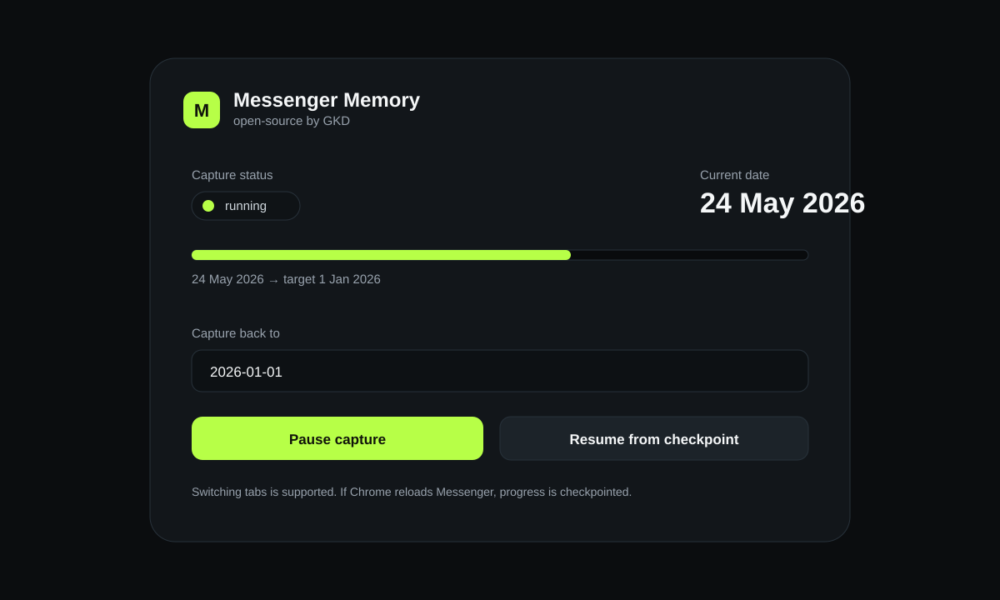
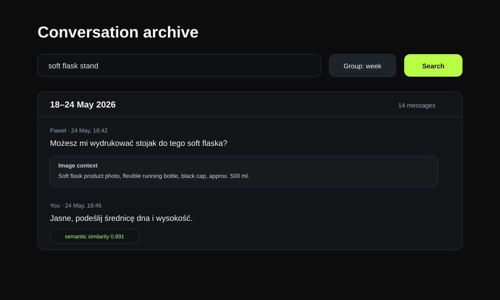
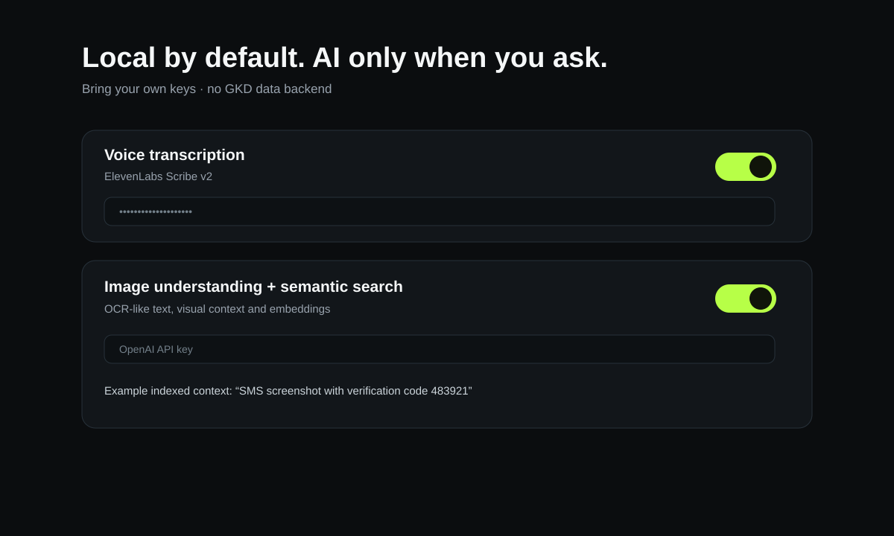

Messenger Better Search zbiera Twoją historię rozmów do lokalnego archiwum, grupuje ją po czasie i pozwala przeszukiwać tekst, transkrypcje głosówek oraz kontekst zdjęć. AI jest opcjonalne — przynosisz własny klucz.
Pobierz najnowszą wersję Kod na GitHubie ↗Ustawiasz np. 1 stycznia. Podczas przewijania widzisz aktualnie osiągniętą datę, progress i checkpoint. Jeśli Messenger przestanie ładować historię lub Chrome przeładuje kartę, zobaczysz powód i opcję wznowienia.

Grupuj po dniu, tygodniu, miesiącu lub roku. Szukaj zwykłym tekstem albo — opcjonalnie — semantycznie.

Transkrypcja audio, OCR-like tekst oraz krótki opis tego, co znajduje się na zdjęciu, trafiają do tego samego indeksu.

Podstawowy capture i wyszukiwanie są lokalne. Nie mamy backendu zbierającego Twoją historię. Funkcje AI włączasz sam i podajesz własny klucz dostawcy. Dzięki temu możesz odzyskać kontrolę nad danymi, które i tak już istnieją w Twoim koncie Messenger.